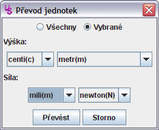

Tento dialog lze vyvolat pomocí nabídky Editace -> Převod
jednotek..., která je dostupná v hlavním okně aplikace. Umožňuje převést
hodnoty na požadovanou jednotku.

Tato volba způsobí, že se budou převádět všechny naměřené hodnoty.
Tato volba způsobí, že se budou převádět pouze označené hodnoty z tabulky naměřených hodnot.
Pro každý sloupec tabulky naměřených hodnot lze zvolit jednotku a případně její prefix používaný v soustavě SI. Nabízeny jsou pouze ty jednotky, na které lze převést alespoň jednu hodnotu z vybraných naměřených hodnot.
Převede naměřené hodnoty na zvolené jednotky. Pokud některou z hodnot nelze převést na zvolené jednotky, bude ponechána v nezměněné podobě.
Dialogové okno se uzavře bez provedení jakýchkoliv změn.